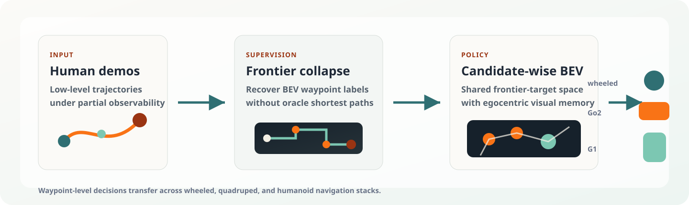

Long-Horizon Indoor Search
Waypoint-level decisions guide the platform through extended indoor navigation while preserving a compact search state.
Map-based methods compress visual observations into sparse map labels, while RGB-only policies preserve appearance but struggle with long-horizon search.
Low-level human demonstrations are converted into high-level BEV waypoint labels, enabling imitation learning without oracle shortest-path supervision.
Frontier and target candidates are compared in one BEV decision space while retaining candidate-specific visual memory and relative geometry.

Executes SAGE-NAV waypoint decisions through a mobile base controller.
Uses the same high-level waypoint interface on a legged platform.
Supported through the waypoint-level interface; add G1 clips here when available.
Waypoint-level decisions guide the platform through extended indoor navigation while preserving a compact search state.
The policy compares frontier candidates before committing to the next navigable waypoint.
Candidate-specific memory keeps target evidence available instead of flattening it into sparse map labels.
BEV grounding helps the robot choose a shorter waypoint route when the target is not immediately visible.
Frontier and target candidates are selected in a common BEV decision space.
The policy avoids oracle shortest paths while preserving spatial search structure.
The same high-level waypoint interface transfers to a legged robot controller.
The Go2 platform follows selected frontier waypoints while its low-level controller handles locomotion.
Candidate-specific visual memory preserves object cues that map labels may lose.
A single waypoint policy can be executed through the quadruped navigation stack.
High-level decisions remain stable while low-level locomotion is handled by the embodiment stack.
The policy weighs exploration against target evidence before selecting a waypoint.
Add your human or humanoid walking video here when it is ready.
<video controls><source src='./video/human/your_clip.mp4'></video>
Replace this slot with a clip showing policy transfer to human-scale locomotion.
Drop in another human or G1 walking sequence.
<video controls><source src='./video/human/your_clip_02.mp4'></video>
Use this caption to highlight how waypoint commands are executed by the body controller.
Keep this slot for long corridor or room transition footage.
<video controls><source src='./video/human/your_clip_03.mp4'></video>
Use this card for a frontier-driven transition before the target becomes visible.
Add footage where visual memory changes the decision.
<video controls><source src='./video/human/your_clip_04.mp4'></video>
Highlight a frame where object evidence is preserved for a later decision.
Reserve this for an embodiment comparison clip.
<video controls><source src='./video/human/your_clip_05.mp4'></video>
Show that the same high-level interface can serve different robots.
Use this final slot for a success or target-arrival sequence.
<video controls><source src='./video/human/your_clip_06.mp4'></video>
Mark the final target approach or task completion moment here.
Results are reported on MP3D-Val, HM3D (v0.1), and HM3D (v0.2) for fair comparison with prior work.
| Method | Training Regime | MP3D-Val | HM3D (v0.1) | HM3D (v0.2) | |||
|---|---|---|---|---|---|---|---|
| SR (%) ↑ | SPL (%) ↑ | SR (%) ↑ | SPL (%) ↑ | SR (%) ↑ | SPL (%) ↑ | ||
| Training-free methods | |||||||
| VLFM | Training-free | 36.4 | 17.5 | 52.5 | 30.4 | 63.5 | 32.5 |
| SG-Nav-GPT | Training-free | 40.2 | 16.0 | 54.0 | 24.9 | 49.6 | 25.5 |
| OpenFMNav | Training-free | 37.2 | 15.7 | 54.9 | 24.4 | - | - |
| TriHelper | Training-free | - | - | 56.5 | 25.3 | - | - |
| BeliefMapNav | Training-free | 37.3 | 17.6 | 61.4 | 30.4 | - | - |
| ApexNav | Training-free | 39.2 | 17.8 | 59.6 | 33.0 | 76.2 | 38.0 |
| WMNav | Training-free | 45.4 | 17.2 | 58.1 | 31.2 | 72.2 | 33.3 |
| PIGEON | Training-free | 41.6 | 14.4 | 57.9 | 32.3 | 79.2 | 36.8 |
| STRIVE | Training-free | 52.3 | 23.1 | 62.9 | 34.2 | 79.6 | 38.7 |
| SysNav | Training-free | 50.7 | 18.1 | 63.7 | 30.5 | 80.8 | 37.2 |
| Learning-based methods | |||||||
| DD-PPO | RL | 21.6 | 8.7 | - | - | 27.9 | 14.2 |
| Habitat-Web | Supervised | 14.6* | 4.94* | - | - | - | - |
| ZSON | Supervised | 15.3 | 4.8 | 25.5 | 12.6 | - | - |
| Navid | Supervised | - | - | 32.5 | 21.6 | - | - |
| PixNav | Supervised | - | - | 37.9 | 20.5 | - | - |
| ESC | Supervised | 28.7 | 14.2 | 39.2 | 22.3 | - | - |
| PONI | Supervised | 31.8 | 12.1 | - | - | - | - |
| SemExp | Supervised | 36.0 | 14.4 | - | - | - | - |
| CompassNav | Supervised | 42.0 | 17.5 | 56.6 | 27.6 | - | - |
| Generic policies | |||||||
| UniGoal | Generic | 41.0 | 16.4 | - | - | 54.5 | 25.1 |
| Uni-Navid | Generic | - | - | - | - | 73.7 | 37.1 |
| OmniNav | Generic | - | - | - | - | 56.1 | 30.0 |
| Ours | |||||||
| SAGE-Nav (Ours) | Supervised | 53.8 | 23.1 | 70.5 | 34.6 | 82.2 | 38.5 |
@inproceedings{cai2026sagenav,
title = {SAGE-NAV: Learning BEV-Grounded Waypoint Decisions from Human Demonstrations for Object Navigation},
author = {Cai, Yuxin and Li, Zongtai and Wang, Maonan and Bao, Muyi and Zhu, Haokun and Zhao, Ding and Wang, Wenshan and Yau, Wei-Yun and Zhang, Ji and Lv, Chen},
booktitle = {Conference on Robot Learning (CoRL)},
year = {2026}
}